A practice build to sharpen my HubSpot skills, not built for a client. It runs in a HubSpot test account, using a synthetic dataset of Greater Manchester dental practices for a fictional lead-generation agency. It covers the data model, a deal pipeline with data-quality rules, workflow automation, a sales dashboard and automated outbound sequences, each tested end to end.
I added custom company properties for ICP score, Private vs NHS, practice size and data source, then imported companies and contacts and linked each contact to its practice. Data source is a dropdown with fixed values rather than free text, so reports group cleanly instead of splitting on spelling differences.
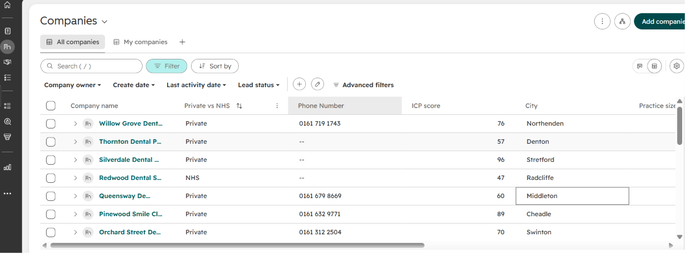
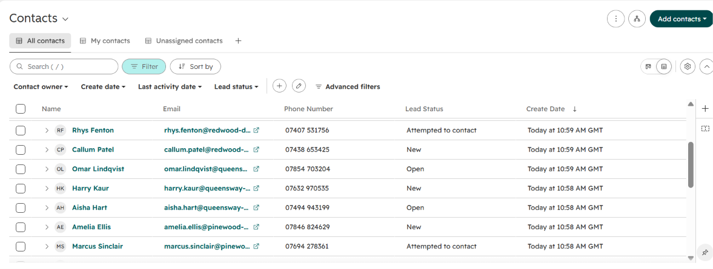
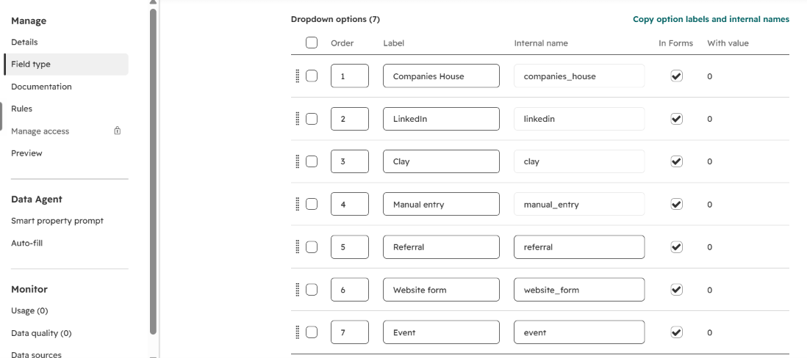
The Lead-gen retainers pipeline runs Discovery call, Proposal sent, Negotiation, Contract sent, Closed won and Closed lost. I loaded 15 deals worth £207,000: £157,200 open, £32,400 closed won and £17,400 closed lost. Each deal is linked to its practice and a named contact, and stage probabilities rise as deals progress, which feeds the weighted forecast.
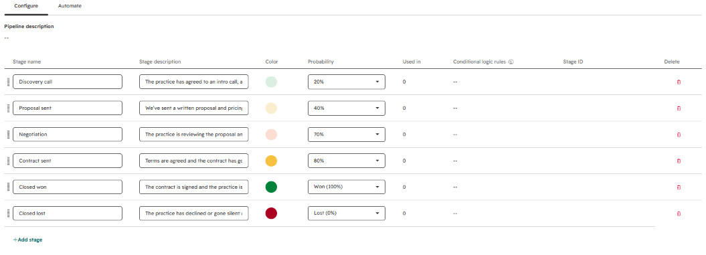
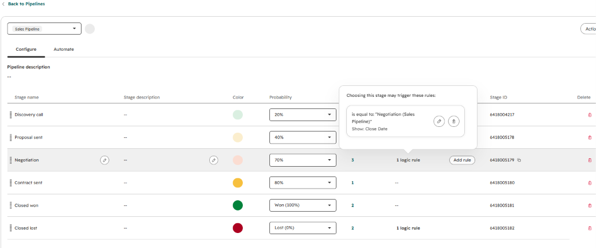
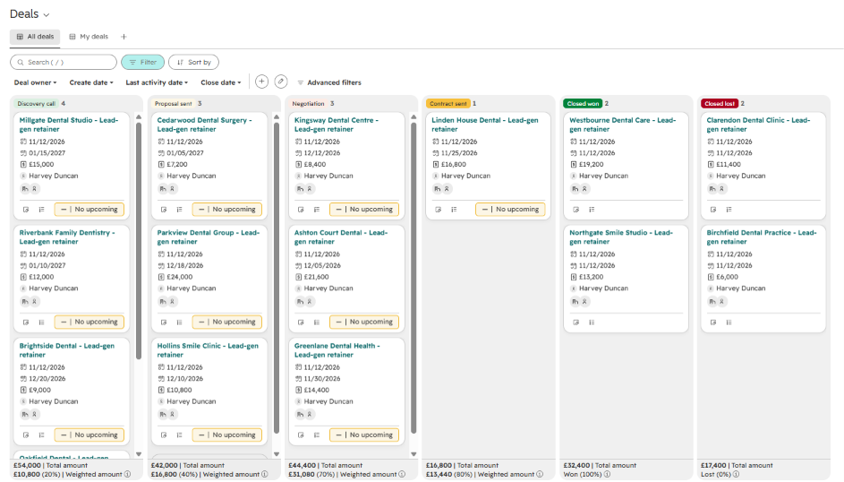
Practices scoring above 70 move to Marketing Qualified Lead and get a follow-up task, with larger practices given a high-priority task. Practices scoring 70 or below are routed to a second owner. A data-quality workflow flags missing or badly formatted details, records the problem on the record and gives the owner a task that says exactly what to fix. On the test data it flagged 10 of 30 practices.
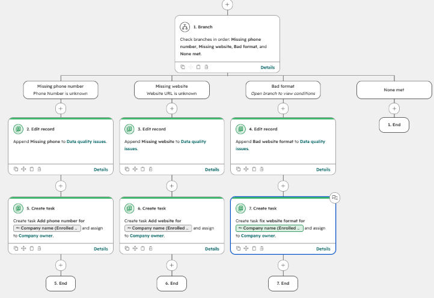
A task is a to-do that disappears once ticked off. The Data quality issues property stays on the record, so problems can be filtered, counted and reported on, for example how many practices are missing a phone number.
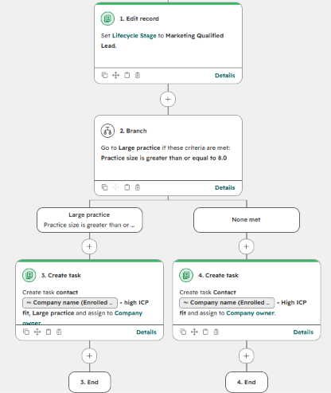
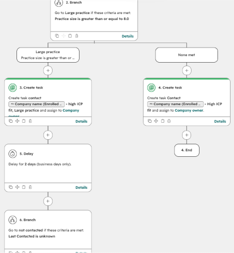
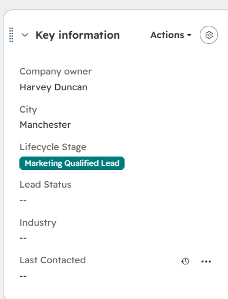
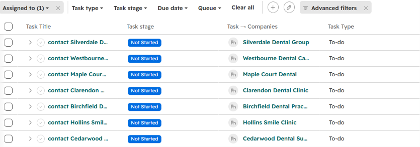
Five reports on one dashboard, each paired with the action it should prompt.
8 Lead, 7 Marketing Qualified, 13 Opportunity, 2 Customer. If leads pile up while MQLs stay low, qualification is stalling: review the ICP threshold or follow up faster.
£157,200 open, with the most (£54,000) still at Discovery call. A thin middle means too few deals reach Negotiation, so the focus is moving Discovery deals forward.
Shows which channels produce leads: more effort into the strongest source, and questions for the weakest.
£13,200 renews in March 2027 and £19,200 in June 2027, so both clients get contacted a few months ahead.
One deal lost to price and one to no response. A pattern of price losses would mean reviewing pricing; no response points to better follow-up.
The lifecycle chart showed 13 Opportunity practices but only 11 open deals. HubSpot doesn’t move lifecycle stages backwards, so practices with lost deals stayed at Opportunity.
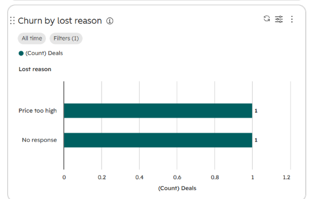
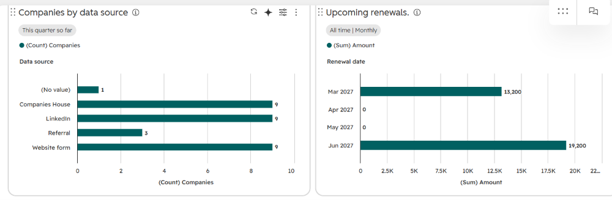
Two sequences match effort to account value. Tier 1, for practices with 8 or more dentists, runs five steps: an intro email, a LinkedIn task, a call task, a follow-up and a break-up email. Tier 2, for smaller practices, sends three emails. Templates use personalisation tokens with fallbacks, follow-ups reply in the same thread, sending is limited to UK business hours, and contacts are unenrolled automatically when they reply or book a meeting.
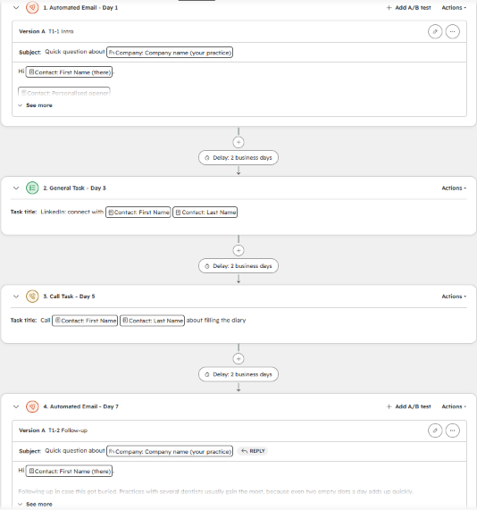
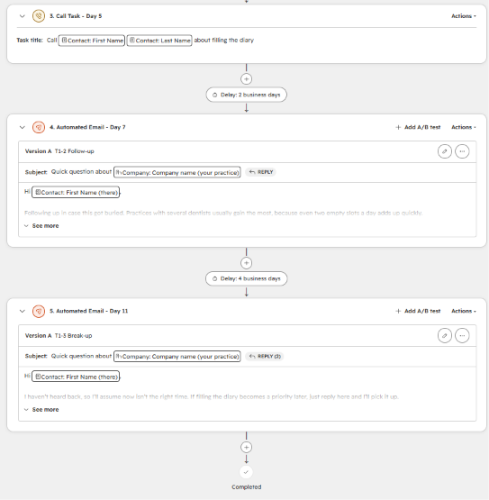
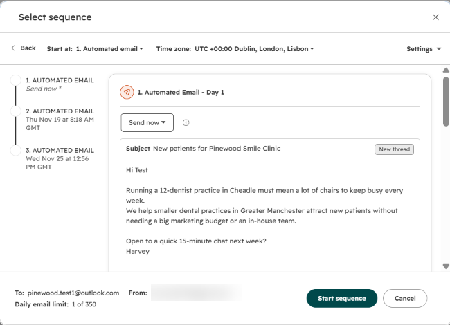
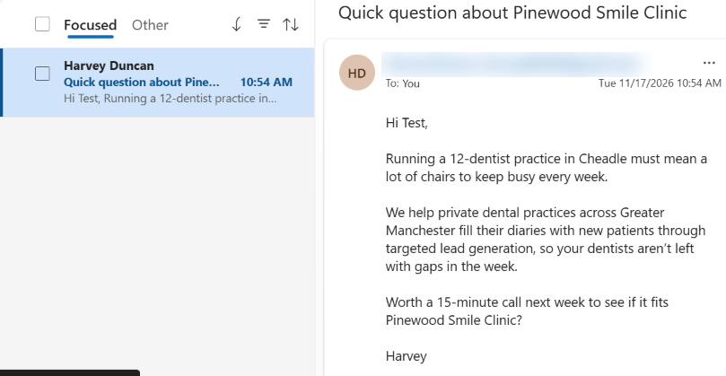
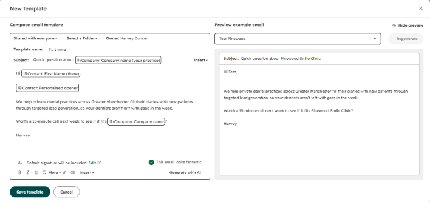
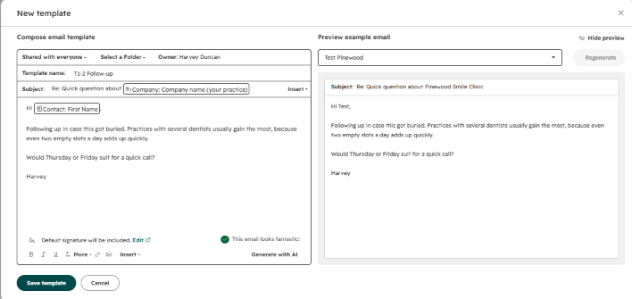
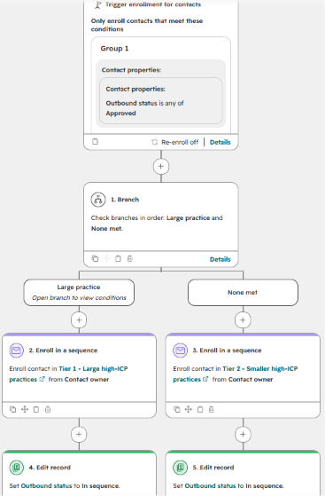
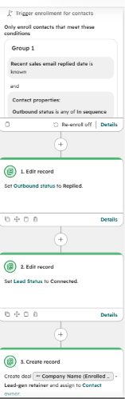
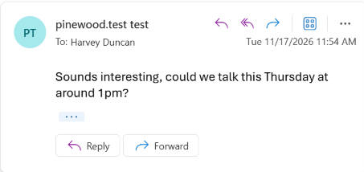
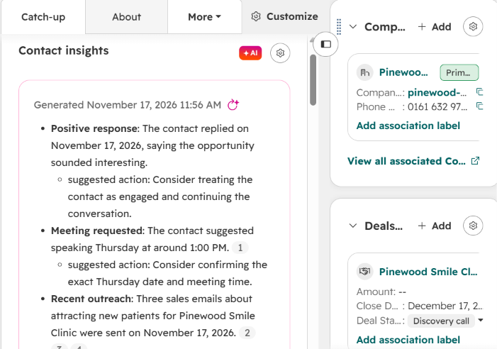
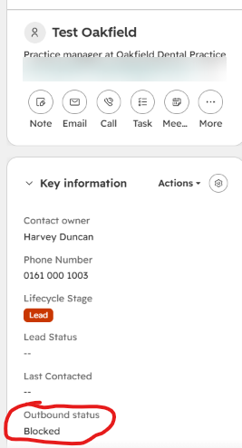
With data privacy settings on, HubSpot refused to enrol contacts until each had a lawful basis and a one-to-one email subscription recorded. Setting both is now part of the contact setup.
All CRM data on this page is synthetic, created for this portfolio. Built by Harvey Duncan.